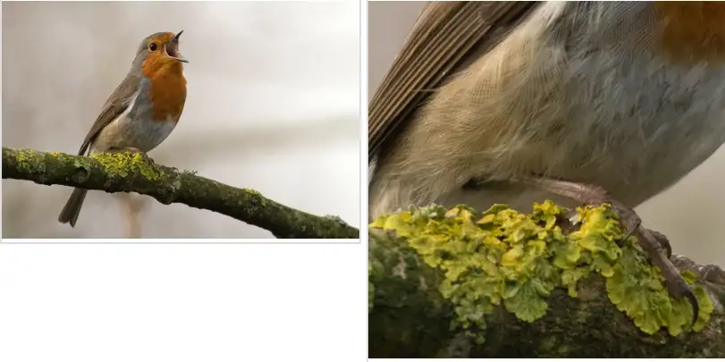

Random Crop

Fig. Random Crop Examples
Random Cropping is the technique of cropping a part of the image randomly in the image. It is done to introduce regularization during training and reducing overfitting in the model. It is often applied at training time and due to which the model never gets the same image twice. It helps in generalizing the model better. Random Cropping increases the amount of training data, helps the model generalize better, introduces diversity in the data.
One of the significant implications of training on a low amount of data is the possibility of overfitting. Overfitting occurs when the model is said to have memorized the training data such that it performs better on it while performs poorly on unseen test data. In such cases, the amount of data is artificially increased to force a model to learn from many scenarios to reduce overfitting chances.